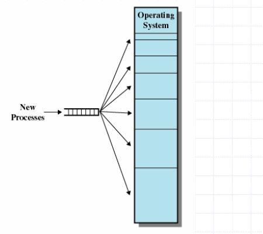
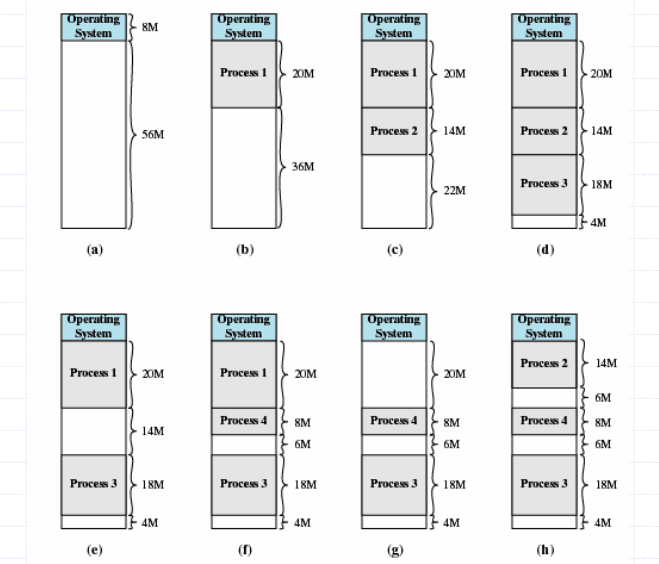

Introduction
Memory management is the functionality of an operating system which handles or manages primary memory and moves processes back and forth between main memory and disk during execution. Memory management keeps track of each and every memory location, regardless of either it is allocated to some process or it is free. It checks how much memory is to be allocated to processes. It decides which process will get memory at what time. It tracks whenever some memory gets freed or unallocated and correspondingly it updates the status
Why do we need memory management in OS?
Relocation:
When we generally work on a multiprogramming system, several processes are running in the background. It isn’t possible for us to know in advance which other programs will reside in the main memory and when we’ll execute our processes.To solve this, the memory manager takes care of the executed and to be executed processes and allocates and frees up memory accordingly, making the execution of processes smooth and memory efficient
Protection:
With the execution of multiple processes, one process may write in the address space of another process. This is why every process must be protected against unwanted interference by any other process. The memory manager, in this situation, protects the address space of every single process. Keeping in mind the relocation algorithm too. The protection aspect and the relocation aspect of the memory manager work in synchronization.
Some Other problems which can be solved by memory management are Sharing,Logical organization,physical organization.
Memory partitioning
For better utilization of memory and flow of execution, we divide the memory into different sections to be used by the resident programs. The process of dividing the memory into sections is called memory partitioning.
Fixed Partitioning/Static Partitioning:
In fixed partitioning, the number of non-overlapping partitions in RAM is fixed, but the size of each partition may not be the same. As the allocation of memory is contiguous, no spanning is allowed. In fixed partitioning, the partitions are made either before execution or during system configuration.
Dynamic Partitioning:
In dynamic partitioning, the primary memory is emptied, and partitions are made during the run time according to the needs of the different processes. The size of the partition will be equal to the incoming process. The number of partitions will not be fixed and will depend on the number of incoming processes. It will also depend on the size of the main memory. The partition size varies according to the need of the processes.
Fragmentation
After the partitioning of memory comes the fragmentation. When the processes are loaded to and removed from memory, the memory space that gets freed breaks into little pieces. Now, when this happens, no further processes can be allotted memory as their size becomes too small for that, and hence the memory blocks remain unused. The solution to this problem is known as fragmentation. In other words, fragmentation can be defined as the issue of a memory that arises when processes are loaded to and removed from the memory, breaking it into pieces.
Fragmentation is of two types:
-
External fragmentation
The total memory space is enough to satisfy a request or to reside a process in it. But it is not contiguous, so it cannot be used.
-
Internal fragmentation
Memory block assigned to processes is bigger. Some portion of the memory may be left unused, as it cannot reside in any other processes.
Swapping
Swapping is a technique for making memory compact. It is a mechanism that is used to temporarily swap processes out of the main memory to secondary memory, and this makes more memory available for some other processes. At some later time, the system can swap back the process from the secondary memory to the main memory. Swapping does affect the performance of the system, but it helps in running multiple processes parallelly. The total time taken by the swapping of a process includes the time it takes to move the entire process to the secondary memory and then again to the main memory.
Multiprogramming with Fixed Tasks (MFT)
- Memory is divided into several fixed-size partitions
- Each partition may contain exactly one process/task
- The degree of multiprogramming is bound by the number of partitions
- Memory wastage is caused due to internal fragmentation
Multiprogramming with Variable Tasks (MVT)
- Developed to address the drawbacks of fixed partitioning
- Partitions of variable length and number
- When a process is brought into main memory, it is allocated exactly as much memory as it requires
- No internal fragmentation
Memory Allocation
Memory allocation is a process by which computer programs are assigned memory or space
-
First Fit
The first hole that is big enough is allocated to program
-
Best Fit
The smallest hole that is big enough is allocated to program
-
Worst Fit
The largest hole that is big enough is allocated to program
-
Next Fit
Scans the memory from the location of last placement and chooses next available block that is large enough